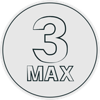

С нуля

Моделирование в 3ds Max
Интерфейс, основные инструменты моделирования, модификаторы, логика работы в 3ds Max.
Результат: пропадает страх перед программой. «Не боги горшки обжигают».
13 блоков, 66 видео, 42 модели
Программа курса ↓
- Введение: навигация, примитивы, модификаторы, сплайны
- Полигоны. База
- Editable Poly
- Graphite. Пластическое моделирование
- Мебель
- Практика по референсам
- Стены по плану
- Soft Selection
- Модульные объекты
- Массивы
- Большая практика
- Pro-Secrets
- Подача модели в Marmoset